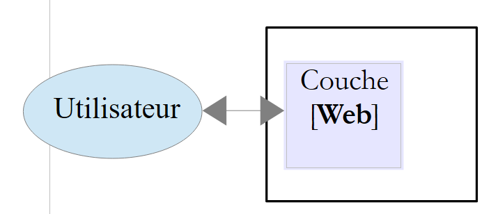
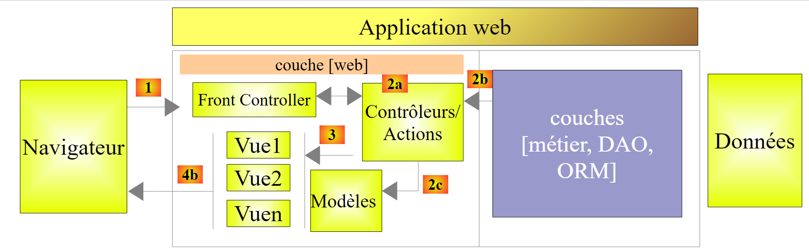

1. مقدمه
PDF برای این سند در |ICI| موجود است.
مثالهای این سند در |ICI| موجود است.
در اینجا، هدف ما این است که از طریق مثالها، مفاهیم کلیدی ASP.NET MVC، یک چارچوب وب، را معرفی کنیم.NET، که چارچوبی برای توسعهٔ برنامههای وب بر اساس الگوی MVC (مدل–نما–کنترلکننده) فراهم میکند.
درک مثالهای این سند نیازمند پیشنیازهای کمی است. تنها دانش پایهای از زبان C# ضروری است. این دانش را میتوان در سند «مقدمهای بر زبان C#» در URL [آموزش C# نسخه ۳.۰ با فریمور .NET ۳.۵ (۲۰۰۸)] یافت. یک مطالعه موردی برای به کارگیری دانش کسبشده در ASP.NET MVC ارائه شده است. این مطالعه از چارچوب Entity Framework (نقشهبردار شیء-رابطهای) ORM استفاده میکند. این ORM در مستند «مقدمهای بر Entity Framework 5 Code First» ارائه شده است که در URL [مقدمهای بر Entity Framework 5 Code First از طریق مثالها (۲۰۱۲)] در دسترس است.
نمونههای مختلف این سند به صورت یک فایل قابل دانلود در URL و [مقدمهای بر چارچوب ASP.NET MVC از طریق مثالها (۲۰۱۳)] موجود است.
این سند از جهات بسیاری ناقص است. برای اطلاعات بیشتر در مورد ASP.NET MVC، میتوان به مراجع زیر مراجعه کرد:
- [ref1]: کتاب «Pro ASP.NET MVC 4» نوشتهٔ آدام فریمن و منتشرشده توسط Apress. این کتابی عالی است. اگر این کتاب بهصورت رایگان و به زبان فرانسوی بهصورت آنلاین در دسترس بود، این سند بینیاز بود. توصیه میکنم هر کسی که تواناییاش را دارد، با استفاده از این کتاب، ASP.NET MVC را بیاموزد. کد منبع مثالهای کتاب به صورت رایگان در URL [http://www.apress.com/9781430242369] در دسترس است؛
- [ref2]: وبسایت چارچوب [http://www.asp.net/mvc]. در آنجا تمام مطالبی را که برای خودآموزی نیاز دارید، خواهید یافت. نسخه فرانسوی در URL [http://dotnet.developpez.com/mvc/ ] موجود است؛
- وبسایت [developpez.com] که به ASP.NET و [http://dotnet.developpez.com/aspnet/ ] اختصاص دارد.
این سند به گونهای نوشته شده است که میتوان آن را بدون رایانه در دست خواند. در نتیجه، شامل تصاویر صفحه متعدد است.
1.1. نقش ASP.NET و MVC در یک برنامه وب
ابتدا، بیایید نقش ASP.NET MVC را در توسعه یک برنامه وب در نظر بگیریم. در اکثر موارد، این برنامه بر روی یک معماری چندلایه مانند موارد زیر ساخته خواهد شد:
 |
- لایه [Web] لایهای است که با کاربر وباپلیکیشن تعامل دارد. کاربر از طریق صفحات وبی که توسط یک مرورگر نمایش داده میشوند، با وباپلیکیشن تعامل میکند. این لایه جایی است که ASP.NET و MVC قرار دارند، و تنها در همین لایه؛
- لایه [métier] قواعد کسبوکار برنامه را پیادهسازی میکند، مانند محاسبه حقوق یا فاکتور. این لایه از دادههای کاربر از طریق لایه [Web] و از SGBD از طریق لایه [DAO] استفاده میکند؛
- لایه [DAO] (ابجکتهای دسترسی به داده)، لایه [ORM] (نقشهبردار شیء-رابطهای) و کانکتور ADO.NET دسترسی به دادهها در SGBD را مدیریت میکنند. لایه [ORM] بهعنوان پلی میان اشیاء مدیریتشده توسط لایه [DAO] و سطر و ستونهای جداول در یک پایگاه داده رابطهای عمل میکند. دو ORM به طور معمول در سراسر جهان استفاده میشوند: NET، NHibernate (http://sourceforge.net/projects/nhibernate/) و Entity Framework (http://msdn.microsoft.com/en-us/data/ef.aspx);
- یکپارچهسازی لایهها را میتوان با استفاده از یک مخزن تزریق وابستگی مانند Spring (http://www.springframework.net/) انجام داد؛
اکثر مثالهای ارائهشده در زیر تنها از یک لایه، لایه [Web]، استفاده خواهند کرد:
 |
با این حال، این سند با ساخت یک برنامه وب چندلایه به پایان میرسد:
 |
1.2. ASP.NET MVC
ASP.NET MVC الگوی معماری موسوم به MVC (مدل–نما–کنترلکننده) را به شرح زیر پیادهسازی میکند:
 |
پردازش یک درخواست مشتری به شرح زیر انجام میشود:
- درخواست – URLهای درخواستی به شکل http://machine:port/contexte/Controlleur/Action/param1/param2/....?p1=v1&p2=v2&... هستند. [Front Controller] از یک فایل پیکربندی برای «مسیردهی» درخواست به کنترلکننده صحیح و اکشن صحیح در آن کنترلکننده استفاده میکند. برای این کار، از مسیر [Controlleur/Action] در URL استفاده میکند. باقیمانده URL و [/param1/param2/...] پارامترهای اختیاری هستند که به اکشن ارسال میشوند. «C» در MVC در این مورد، رشته [Front Controller, Contrôleur, Action] است. اگر مسیر [Controlleur/Action] به یک کنترلر یا اکشن موجود منتهی نشود، سرور وب پاسخ خواهد داد که URL درخواستی یافت نشد.
- پردازش
- عمل انتخابشده ممکن است از پارامترهای parami که توسط [Front Controller] به آن ارسال شده است، استفاده کند. این پارامترها ممکن است از چندین منبع منشأ بگیرند:
- مسیر [/param1/param2/...] از URL،
- پارامترهای [p1=v1&p2=v2] از URL,
- پارامترهای ارسالشده توسط مرورگر در درخواست آن؛
- هنگام پردازش درخواست کاربر، ممکن است اقدام به لایههای [métier] و [2b] نیاز داشته باشد. پس از پردازش درخواست مشتری، ممکن است پاسخهای مختلفی ایجاد شود. یک مثال کلاسیک این است:
- یک صفحهٔ خطا اگر درخواست نتوانست به درستی پردازش شود
- در غیر این صورت، یک صفحه تأیید
- اقدام دستور نمایش یک نمای مشخص را صادر میکند [3]. این نما دادههایی را که به عنوان مدل نما شناخته میشوند، نمایش میدهد. این همان M در MVC است. اقدام این مدل M [2c] را ایجاد کرده و به نمایش یک نما V [3] دستور میدهد؛
- پاسخ – نمای انتخابشده V از مدل M ساختهشده توسط اکشن برای راهاندازی بخشهای پویا از پاسخی که باید به کلاینت ارسال کند HTML استفاده میکند، و سپس این پاسخ را ارسال میکند.
اکنون، بیایید ارتباط بین معماری وب MVC و معماری لایهای را روشن کنیم. بسته به نحوه تعریف مدل، این دو مفهوم ممکن است به هم مرتبط باشند یا نباشند. بیایید یک برنامه وب تکلایه ASP.NET MVC را در نظر بگیریم:
 |
اگر لایه [Web] را با استفاده از ASP.NET و MVC پیادهسازی کنیم، در واقع یک معماری وب MVC خواهیم داشت اما یک معماری چندلایه نخواهیم داشت. در اینجا، لایه [Web] همه چیز را مدیریت خواهد کرد: ارائه، منطق کسبوکار و دسترسی به دادهها. این اکشنها هستند که این کار را انجام خواهند داد.
اکنون، بیایید یک معماری وب چندلایه را در نظر بگیریم:
 |
لایه [Web] میتواند بدون فریمورک و بدون پیروی از مدل MVC پیادهسازی شود. بنابراین ما در واقع یک معماری چندلایه داریم، اما لایه وب مدل MVC را پیادهسازی نمیکند.
بنابراین، لایه [Web]میتواند با استفاده از ASP.NET و MVC پیادهسازی شود که منجر به یک معماری لایهای با یک لایه [Web] از نوع MVC میشود. پس از انجام این کار، این لایه ASP.NET و MVC را میتوان با یک لایه استاندارد ASP.NET (WebForms) جایگزین کرد در حالی که بقیه را حفظ میکند (منطق کسبوکار، DAO، ORM) دقیقاً همانطور که هست. سپس یک معماری لایهای خواهیم داشت با یک لایه [Web] که دیگر از نوع MVC نیست.
در MVC بیان کردیم که مدل M همان نمای V است، c.a.d – مجموعهای از دادههایی که توسط نمای V نمایش داده میشوند. تعریف دیگری از مدل M برای MVC ارائه شده است:
 |
بسیاری از نویسندگان معتقدند که آنچه در سمت راست لایه [Web] قرار دارد، مدل M از MVC را تشکیل میدهد. برای جلوگیری از ابهام، میتوان به موارد زیر اشاره کرد:
- مدل دامنه وقتی به همه چیز در سمت راست لایه [Web] اشاره میشود
- مدل نماهنگ زمانی که به دادههای نمایشدادهشده توسط یک نما V اشاره میشود
از این پس، اصطلاح «مدل M» منحصراً به مدل یک نما V اشاره خواهد داشت.
1.3. ابزارهای مورد استفاده
در ادامه، ما از نسخههای Express ویژوال استودیو ۲۰۱۲ (سپتامبر ۲۰۱۳) استفاده میکنیم:
- [http://www.microsoft.com/visualstudio/fra/products/visual-studio-express-for-windows-desktop ] برای برنامههای دسکتاپ؛
- [http://www.microsoft.com/visualstudio/fra/products/visual-studio-express-for-Web ] برای برنامههای وب.
برای نصب آخرین نسخههای این محصولات، میتوانید از [Web Platform Installer] مایکروسافت (http://www.microsoft.com/Web/downloads/platform.aspx) استفاده کنید.
علاوه بر این، از مرورگر کروم گوگل (http://www.google.fr/intl/fr/chrome/browser/) استفاده کنید. افزونه [Advanced Rest Client] را اضافه کنید. میتوانید این کار را به شرح زیر انجام دهید:
- با استفاده از مرورگر کروم به وبسایت [Google Web store] (https://chrome.google.com/webstore) بروید؛
- برنامۀ [Advanced Rest Client] را جستجو کنید:
 |
- سپس برنامه برای دانلود در دسترس قرار میگیرد:
 |
- برای دانلود آن، باید یک حساب گوگل ایجاد کنید. سپس [Google Web Store] از شما تأیید [1] را میخواهد:
 |
- در [2]، افزونهٔ اضافه شده تحت گزینهٔ [Applications] [3] در دسترس است. این گزینه در هر زبانهٔ جدیدی که ایجاد میکنید (CTRL-T) در مرورگر نمایش داده میشود.
1.4. مثالها
اکثر مثالهای آموزشی تنها به لایه وب محدود خواهند بود:
 |
پس از اتمام این آموزش، یک برنامه وب چندلایه را معرفی خواهیم کرد:
 |